The study treats the AI transition as a closed urban-system problem rather than a productivity calculation alone. In the retained R2 path, laissez-faire private AI raises cumulative real consumption by approximately 5.4% relative to the no-new-AI path, while peak unemployment rises from 2.8% to 13.0% and tail liquidity vulnerability rises from 1.20% to 8.92%. Alternative institutions change where these transition costs appear: employment responsibility preserves jobs inside surviving firms but leaks through exit; an AI levy converts part of the productivity rent into public services; solo enterprise expands self-employment but mostly reallocates existing demand; and the integrated compact strengthens household buffers while shifting stress toward firm survival and concentration.
E1 cumulative real consumption relative to E0 in R2
E1, compared with 2.8% in E0
AI-attributable layoffs blocked inside operating firms
with earmarked public recycling
of solo-enterprise sales
forked from a common qualified month-24 state
From productivity to distribution
The analysis asks not only whether AI expands productive capacity, but how the gains and transition losses circulate through employment, demand, firms, public services, and finance.
Private AI shock
How do consumption gains coexist with unemployment and household-liquidity stress?
Targeted institutions
How do employment responsibility, AI levy recycling, and solo enterprise operate through distinct mechanisms?
Integrated compact
What changes when employment, redistribution, entrepreneurship, public demand, and fiscal constraints interact?
Decision architecture
Can similar aggregate consumption conceal different unemployment and firm-exit transition paths?
Empirical anchors and experimental parameters
Initial unemployment, household behavior, cash buffers, firm dynamics, financial constraints, and fiscal rules are mapped into a coherent model. The website preserves the paper's distinction between empirical anchors and parameters introduced for institutional experimentation.
Initial unemployment 5.2%
The common pre-equilibrium begins from an explicit employment anchor before the seven scenarios fork.
Income, cash, and consumption
Heterogeneous productivity, wages, transfers, liquidity buffers, and marginal propensities shape effective demand.
Warm-up gates
Accounting, numeric bounds, flow drift, and employment drift must pass before month-24 state branching.
A closed-loop urban economy
Household demand, firm production and labor adjustment, fiscal flows, public services, bank credit, entry, and exit are connected through a deterministic monthly settlement system.
The theoretical transition layer connects technology, industry, demand, institutions, and distribution inside one closed feedback system.
Bounded interpretation, deterministic settlement
LLMs do not directly set economic quantities. They select only from pre-specified categorical stances; the simulation engine then applies the accounting and behavioral equations.
| Actor | Allowed LLM choice | Not directly controlled by the LLM |
|---|---|---|
| Households | Normal, cautious, or defensive stance when enabled | Exact consumption expenditure, income, or balance-sheet values |
| Firms | Patient, baseline, or aggressive labor stance | Exact wages, prices, production, employment, or loans |
| Government | Baseline, stabilization, balanced-support, or fiscal-guard stance | Exact tax rates, spending amounts, or debt entries |
Government LLM
Households, firms, and the bank remain rule-driven; R1 functions as an architecture ablation.
Firm + government LLM
R2 is the main experiment because enterprise labor adjustment and survival are central transition mechanisms.
Whitelists and fallback
Invalid outputs revert to rule-based actions, while templates, parsed categories, fallback flags, and response metadata are retained.
Common-state counterfactuals
Every E0–E6 path within an architecture begins from the same qualified month-24 economic state. AI adoption and institutional treatments activate in month 25.
Seven institutional branches
E0 is the evolving no-new-AI counterfactual; E1 identifies the private-AI shock. E2–E4 add individual mechanisms to E1, E5 tests a portfolio, and E6 changes its fiscal constraints.
No new private AI
Post-warm-up time path without new private AI adoption.
Laissez-faire private AI
Identifies the transition effects of private AI relative to E0.
Employment responsibility
Tests layoff restraint, lower work intensity, and temporary wage-cost sharing.
AI infrastructure levy
Recycles part of AI rent into public services and public investment.
Solo enterprise
Tests whether AI-saved time supports self-employment and net-new demand.
Integrated policy
Combines employment responsibility, levy recycling, solo enterprise, transfers, procurement, and government AI.
Tighter fiscal compact
Assesses how stricter deficit and debt limits alter the integrated policy path.
Institutions redistribute transition costs
No scenario dominates across demand, employment, liquidity, distribution, firm survival, public services, concentration, and fiscal exposure.
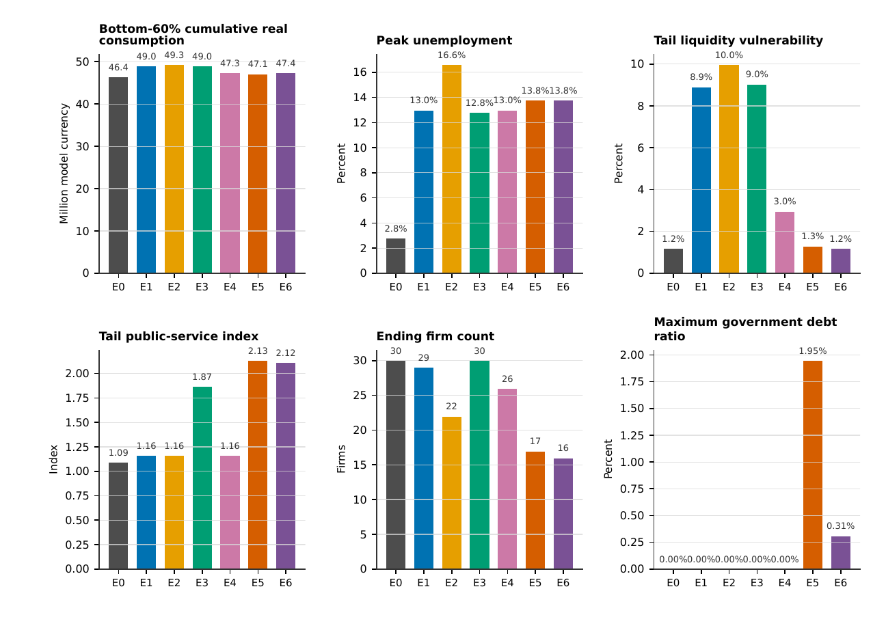
Bottom-60% consumption, peak unemployment, liquidity vulnerability, public services, firm count, and government debt are shown together to prevent single-metric ranking.
1. Private AI raises demand and transition stress
Moving from E0 to E1 raises cumulative real consumption from approximately CNY 123.4 million to CNY 130.1 million (+5.4%) and bottom-60% cumulative real consumption by 5.6%. Peak unemployment rises from 2.8% to 13.0%, while tail liquidity vulnerability rises from 1.20% to 8.92%.
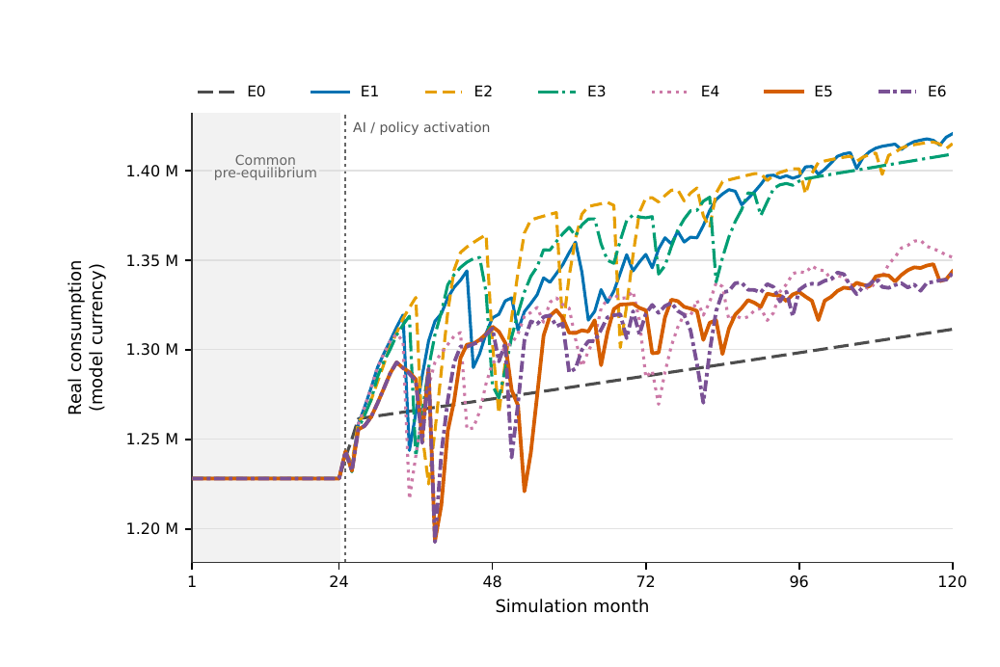
Monthly paths reveal how demand effects emerge over time.
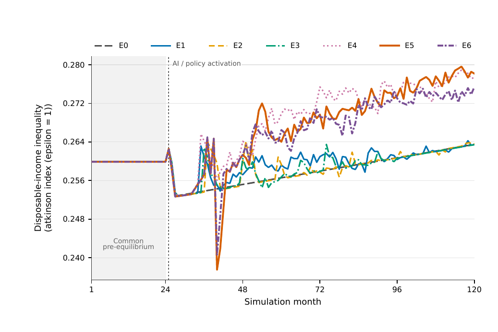
The Atkinson index tracks distributional divergence beyond aggregate demand.
2. Employment protection leaks through enterprise exit
E2 blocks 297 AI-attributable layoffs, reduces tail required work hours from 160 to 147.8, and provides approximately CNY 51,200 in temporary wage-cost sharing. Yet firm exits remove 406 jobs, new firms create only 56, the ending firm count falls to 22, and peak unemployment reaches 16.6%.
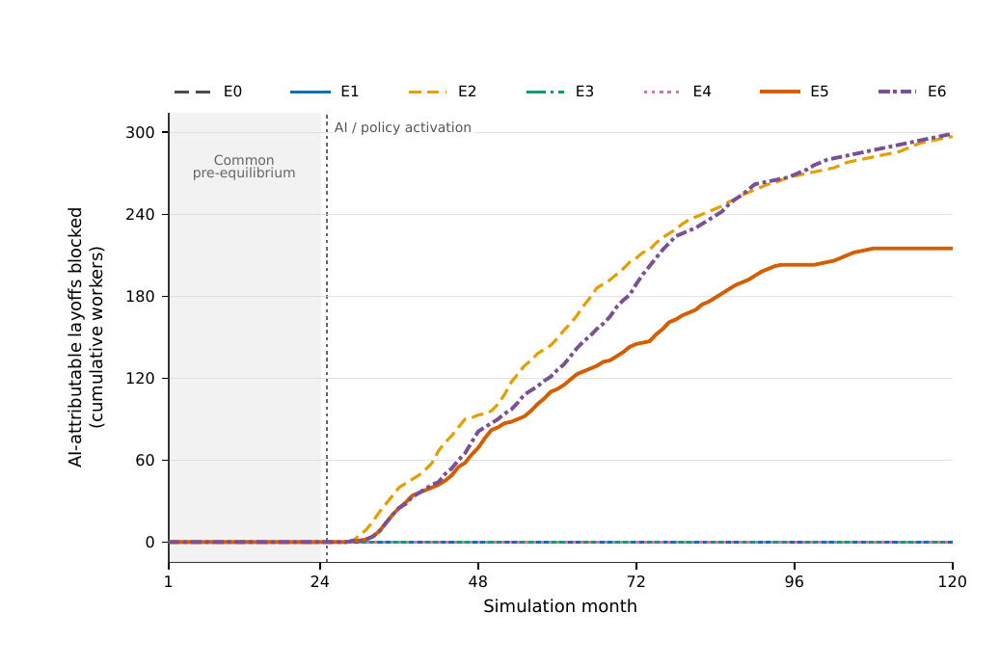
The policy operates inside surviving firms as designed.
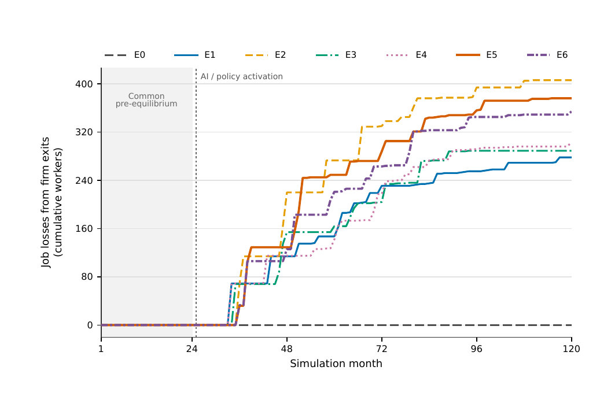
Liquidation and weak job creation remain outside the retention rule.
3. The AI levy converts private rent into public services
E3 collects CNY 5.157 million in AI infrastructure levy revenue. Approximately 70% finances public services and 30% finances public investment. Relative to E1, cumulative consumption is 0.09% higher, peak unemployment is 0.2 percentage points lower, the tail public-service index is 60.4% higher, and 30 firms remain.
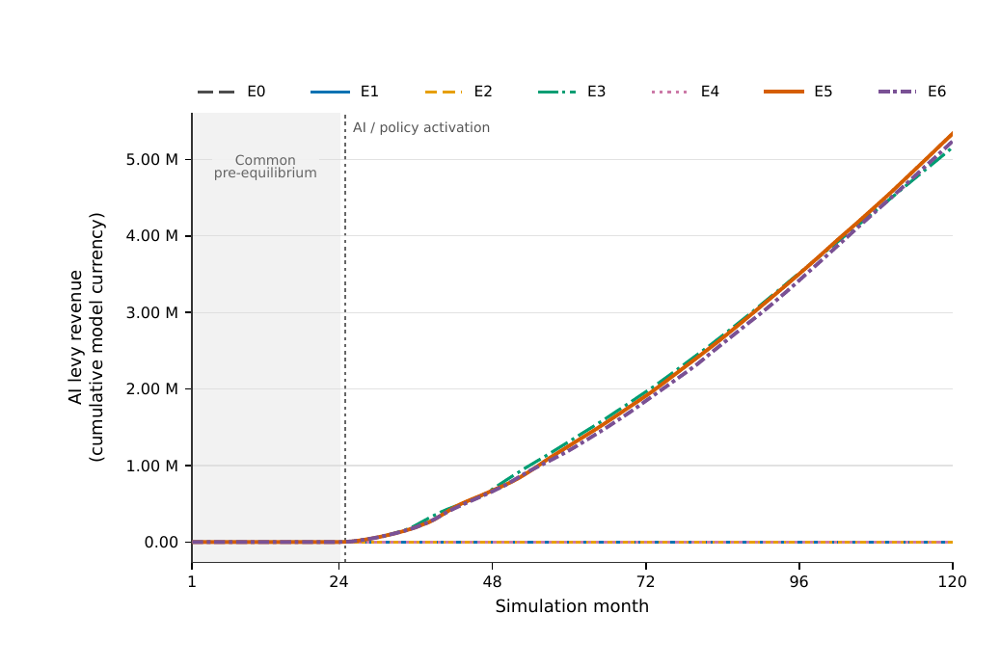
The restricted-fund inflow generated by the programmed levy rule.
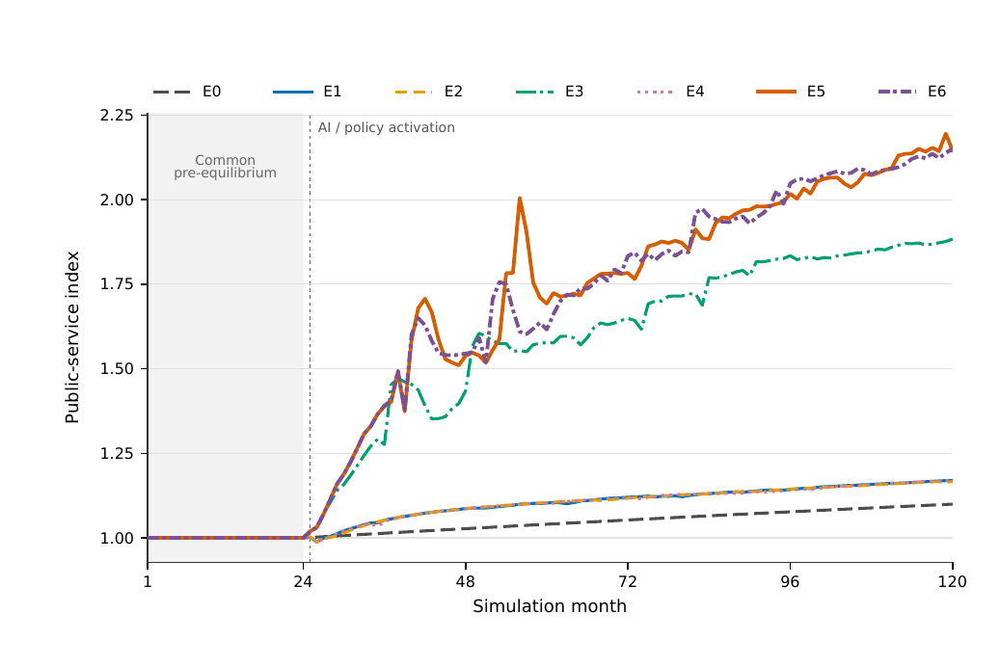
Earmarked spending translates levy receipts into the modeled service index.
4. Solo enterprise is not equivalent to net-new demand
E4 produces 440 solo entries, 400 exits, approximately CNY 3.165 million in sales, and a tail self-employment rate near 8%. Only 24.4% of sales are net additional demand, while 75.6% displace incumbent sales. Liquidity vulnerability falls from 8.92% to 2.97%, but cumulative consumption and bottom-60% consumption fall and income inequality rises.
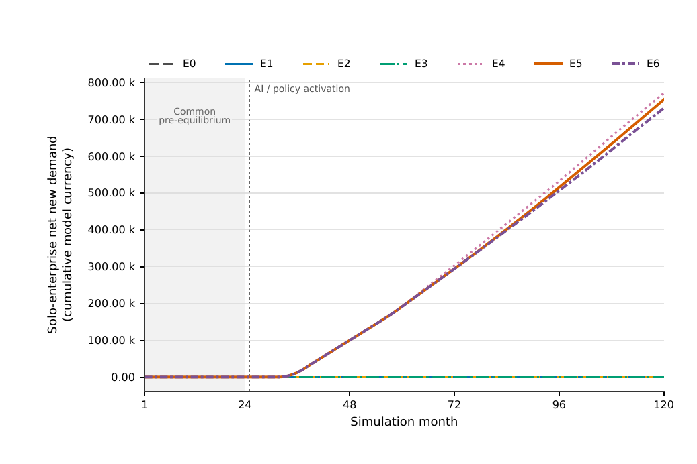
The demand component that adds to rather than reallocates existing expenditure.
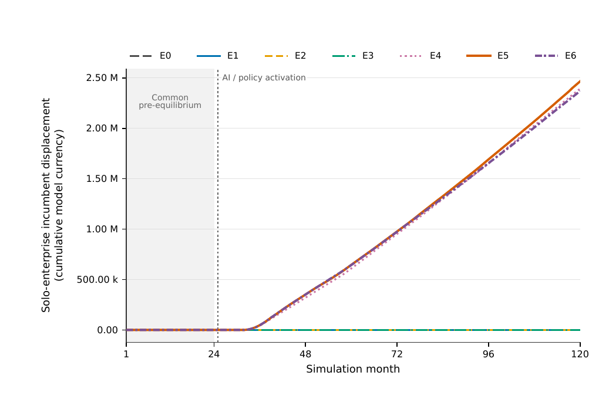
Most solo spending is transferred from existing firms in this path.
5. Integrated policy protects households but pressures firms
E5 blocks 215 AI-attributable layoffs, collects CNY 5.336 million in levy revenue, and generates CNY 3.220 million in solo sales. Relative to E1, the public-service index is 83.1% higher and liquidity vulnerability falls from 8.92% to 1.30%. Cumulative consumption falls by 3.48%, the ending firm count falls to 17, market concentration rises to 0.112, and the income Atkinson index reaches 0.278.
The retained E6 path has a maximum debt ratio of approximately 0.31%, compared with 1.95% in E5, but ends with 16 rather than 17 firms and a larger essential-cash shortfall. Tighter fiscal limits lower debt exposure without restoring firm viability.
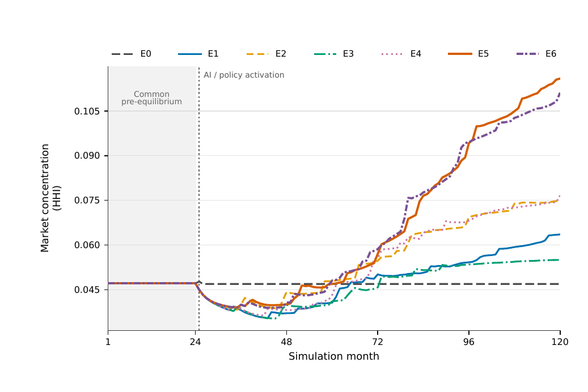
The HHI path reveals firm-side adjustment that aggregate consumption can miss.
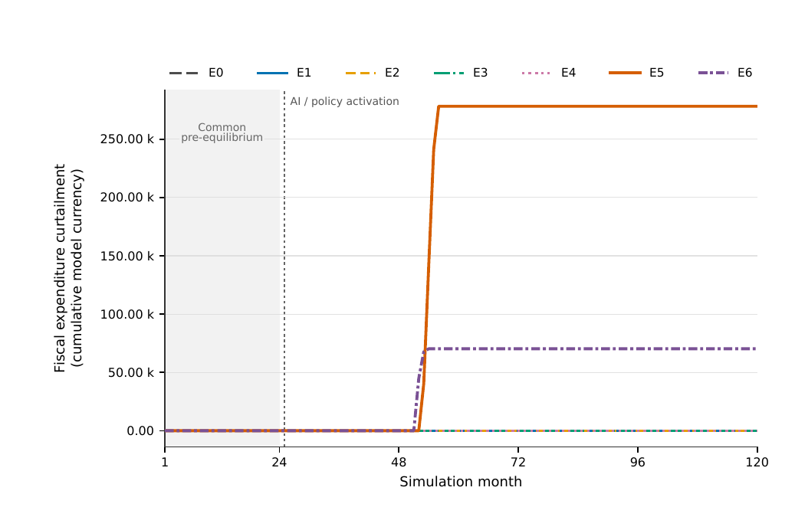
The path shows when and how strongly fiscal limits bind.
Similar totals can conceal different transitions
Across E0–E6, R2 cumulative real consumption differs from R1 by only −0.48% to +0.18%. Unemployment peaks, exit timing, firm survival, and cash distress differ much more strongly.
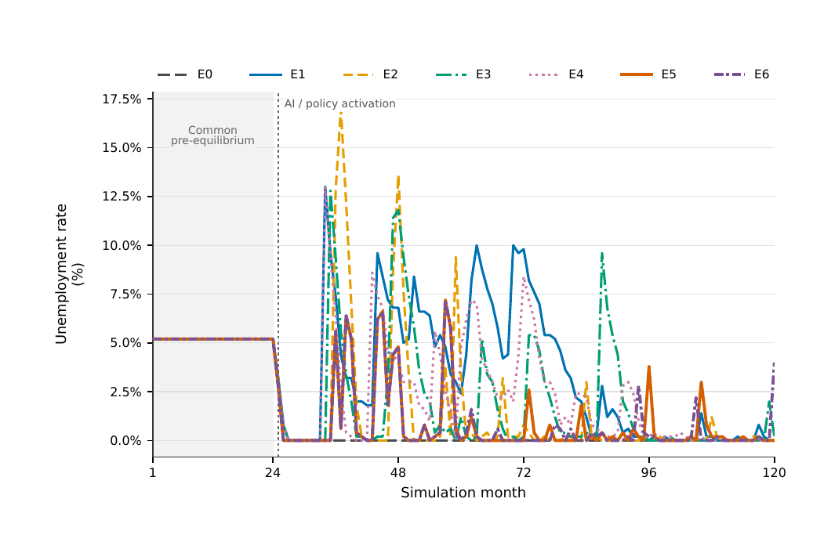
Government uses an LLM; firms remain rule-driven.
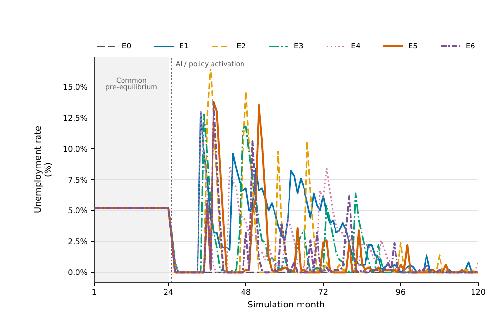
Firm and government LLM participation changes adjustment timing and peaks.
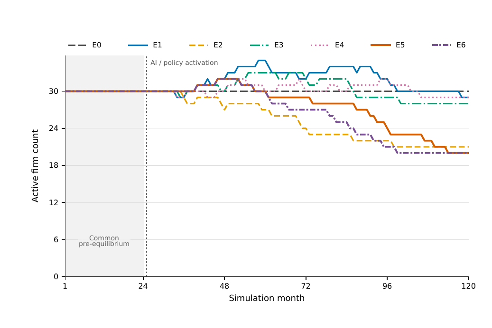
Firm survival under rule-driven enterprise decisions.
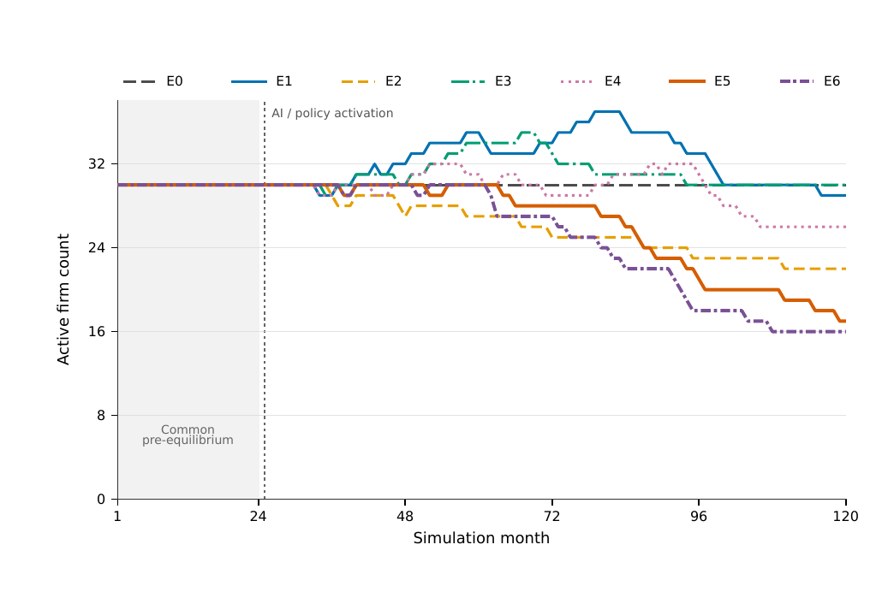
Enterprise-level LLM participation changes exit concentration and survival.
Under E5 and E6, peak unemployment is 7.2% in R1 and 13.8% in R2. Ending firm counts are 20 versus 17 in E5 and 20 versus 16 in E6. Because provider responses are not frozen between architectures, the comparison measures combined architecture and service-response sensitivity rather than a fully isolated architecture effect.
AI transition is an urban systems problem
Employment, consumption, firm survival, infrastructure, public services, and fiscal capacity are concentrated in cities and linked through cash flow and institutional feedback.
Track paths and endpoints
Aggregate output can improve while unemployment peaks, firm exits, liquidity stress, or bottom-group losses worsen.
Productivity is not distribution
Ownership, market power, labor bargaining, infrastructure, and public recycling shape who captures the AI dividend.
Human development
Shared prosperity and human development form a normative objective and research agenda—not an empirical result already established by the simulation.
Limitations and confirmatory agenda
- The formal matrix contains one economic seed and 500 household units. It cannot estimate cross-seed uncertainty, sign stability, confidence intervals, or scale dependence.
- The no-new-AI path continues to adjust after the fork; E1–E0 is an AI shock relative to an evolving no-new-AI economy, not a static 5.2% unemployment baseline.
- Zero-decision fallback establishes execution completeness, not validated behavioral responsiveness. The retained firm weak-demand response check fails.
- Provider generation is not seed-deterministic; exact replay and clean E5–E6 or R1–R2 attribution require frozen response caches.
- The system is a stylized transition economy, not a calibrated digital representation of a particular city. Housing, land, migration, monetary policy, occupation transitions, and empirically calibrated task exposure remain outside the model.
- Confirmatory work should add paired seeds, 1,000- and 5,000-unit population scales, response caching, pre-specified parameter sensitivity, and external validation of directions and plausible magnitudes.
Institutional design determines where the AI transition is absorbed
The model's central result is not that one scenario is universally preferred. Institutions determine where transition costs appear, how quickly productivity gains return to households and public services, and whether employment protection is accompanied by viable firms and net-new demand.
- In the model's common-state contrast, laissez-faire private AI raises cumulative consumption while producing a substantially larger transition-unemployment peak than E0.
- Employment responsibility converts part of labor saving into shorter hours but does not prevent exit-related job loss.
- The AI infrastructure levy converts a share of productivity rent into public services, without identifying an optimal rate or externally valid multiplier.
- Solo enterprise expands self-employment but mostly reallocates existing demand in the retained path.
- The integrated compact improves public services and household liquidity while concentrating stress in firm survival; tighter fiscal limits lower debt exposure without removing firm-side pressure.
- R1 and R2 produce materially different unemployment and exit paths even when cumulative consumption differs little; the retained comparison includes service-response variation.
- The appropriate evaluation system jointly tracks demand, employment, liquidity, distribution, firm dynamics, public services, market structure, and fiscal timing.
- The current contribution is an auditable framework for turning normative claims about broadly shared AI gains into explicit, falsifiable institutional mechanisms—not a city forecast or final policy ranking.
Paper and original figures
The competition-report PDF and the paper-format vector figures are available directly from the page.